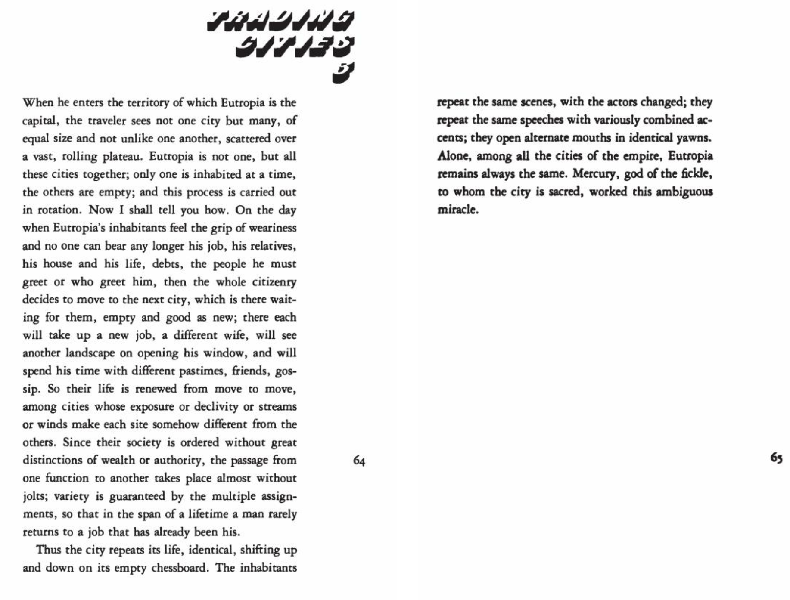
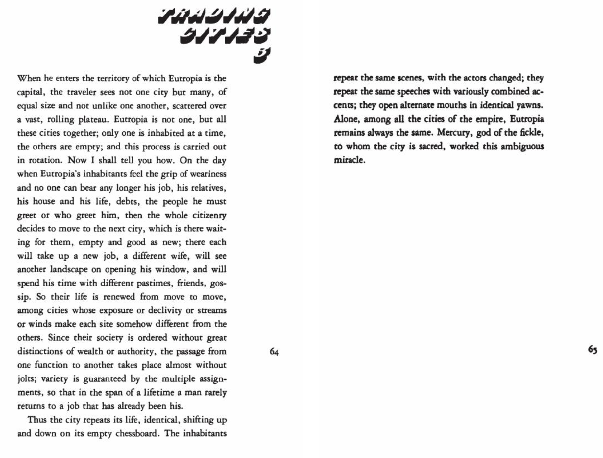

Trading Cities: Eutropia
Perspective 1
This perspective portrays the city the day of “when Eutropia`s
inhabitants feel the grip of weariness and no one can bear any longer his job,
his relative his house and his life” before “the whole citizenry decides to
move to the next city, which is waiting for them”. In my interpretation I
imagined that this time the environment of the city of people being very dark,
thereby I showcased the perspective to be dark with a stormy weather
symbolizing the mood. I also depicted the people in the image to look unhappy,
distressed and or in rage, to show why no one can bear to stay in this city.
Perspective 2
This perspective portrays the city after the citizens of when
Eutropia move to the next city “which is there waiting for them, empty and good
as new” where “each will take up a new job, a different wife, will see another
landscape on opening his windows, and will spend time with different pastimes,
friends, gossip.” Here I wanted to portray my image with a lighter tone as to
depict a new clean shining city as well as the people’s mood in the city becoming
lighter juxtaposing from Perspective 1. I wanted to depict the people to be happy
with their new job, new wife and new friends. I also made the view seen from the
quadrangle to be much different from perspective 1 to show that it is a completely
new city with different landscape
More works >